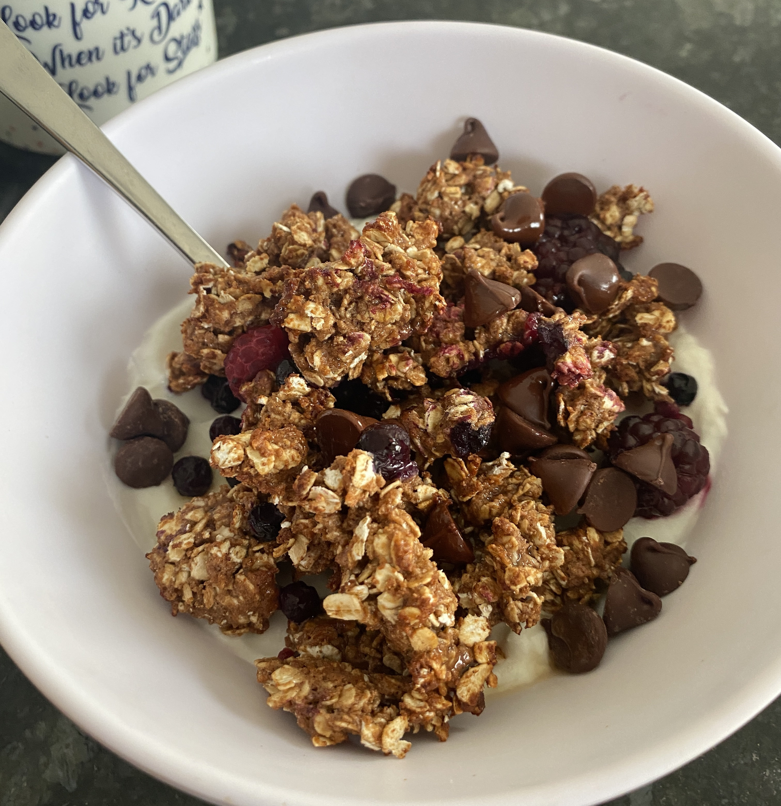

oatmeal

My own personal high protein oatmeal recipe! instead of doing it the normal boring old way, I get creative and bake my oatmeal. It creates a nice crunchy, yet soft texture, almost like a cookie!
ingredients
- 1/4 cup rolled oats
- 1/3 cup FROZEN blueberries
- 1/2 a scoop of protein powder of choice
- 2 TBSP of powdered peanut butter
- 2 TSP of Monkfruit Sweetener
- salt to taste
- 1 TBSP of dark chocolate chips
- 1 cup vanilla greek yogurt
- Milk to preferred texture
Steps
- Preheat the oven to 400 degrees
- All of the dry ingredients together in a small bowl- DO NOT ADD BLUEBERRIES INTO MIX
- Slowly, pour milk in by the tsp and mix after every pour until the texture is crumbly, do NOT use too much milk, it will make the oatmeal too wet. It must be an almost, dry, crumbly texture
- sprinkle oatmeal pieces on parchment paper and then add blueberries onto the paper as well
- Bake for about 8 minutes, do not over bake they will burn
- Serve oatmeal on top of yogurt in a bowl, sprinkle some chocolate chips and a bit more sweetener over it and enjoy!!